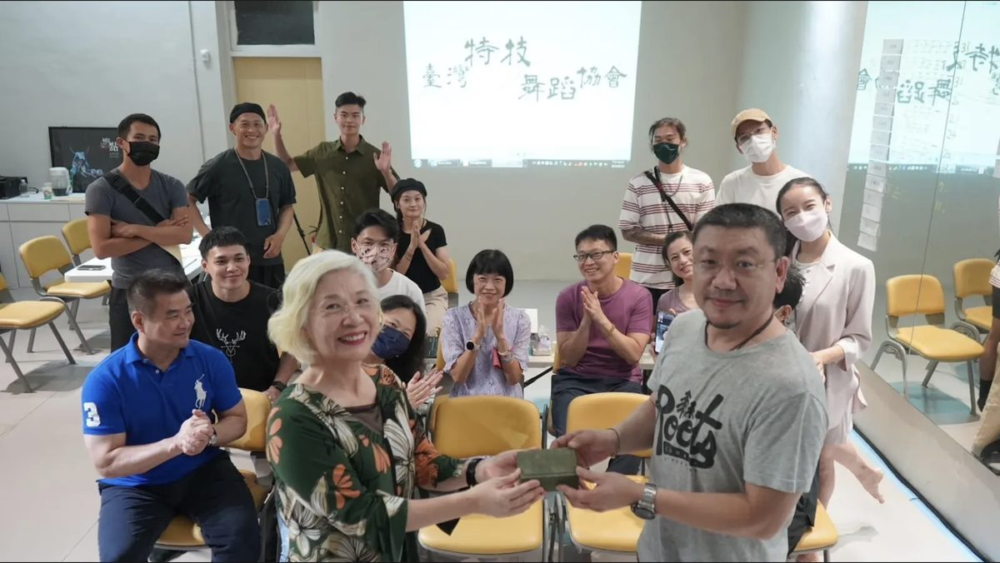

成立大會會議紀錄
臺灣特技舞蹈協會成立大會（第 1 屆第 1 次會員大會）
- 時間 111 年 8 月 28 日 14:00
- 地點 臺北市建國南路一段 177 號（臺灣當代文化實驗場－神的共享吧）
- 主席 陳碧涵 紀錄 陳儒文、吳瑛芳
- 出席人員 應出席會員 41 人；實際出席 32 人（含委託 14 人）、請假 0 人、缺席 9 人
- 列席人員 無
討論提案
- 提案一 111、112 年度（次年度）工作計畫草案說明：依內政部社會團體法組織規範，經本協會籌備委員會草擬，提交會員大會審議通過後，報主管機關核備。
決議：照案通過。 - 提案二 111、112 年度（次年度）收支預算表草案說明：依內政部社會團體法組織規範，經本協會籌備委員會草擬，提交會員大會審議通過後，報主管機關核備。本協會入會費用以一次為原則，常年會費皆每年繳交一次，各位會員切勿任意斷會。
決議：因經費表 111 年度總收入、支出及 112 年度總支出數字有誤，修正後利用電子郵件正式通知會員代表查照、予以通過，再檢送內政部審核。 - 提案三 組織章程草案說明：依內政部社會團體法組織規範，經本協會籌備委員會草擬，提交會員大會審議通過後，報主管機關核備。
決議：修正部分文字，修正後通過。 - 提案四 籌備期間經費支出代墊款項說明：籌備期間經費支出代墊款項共計新臺幣 5,737 元，會員大會確認後撥款支付。
決議：將修正文具用品的支出加減表與發票修正共計新臺幣 5,637 元，修正後照案通過。
第 1 屆第 1 次理事、監事選舉事宜
理事、候補理事、監事、候補監事之選舉結果，詳如理監事及工作人員簡歷冊。
臨時動議
無。
散會
16:30 散會。